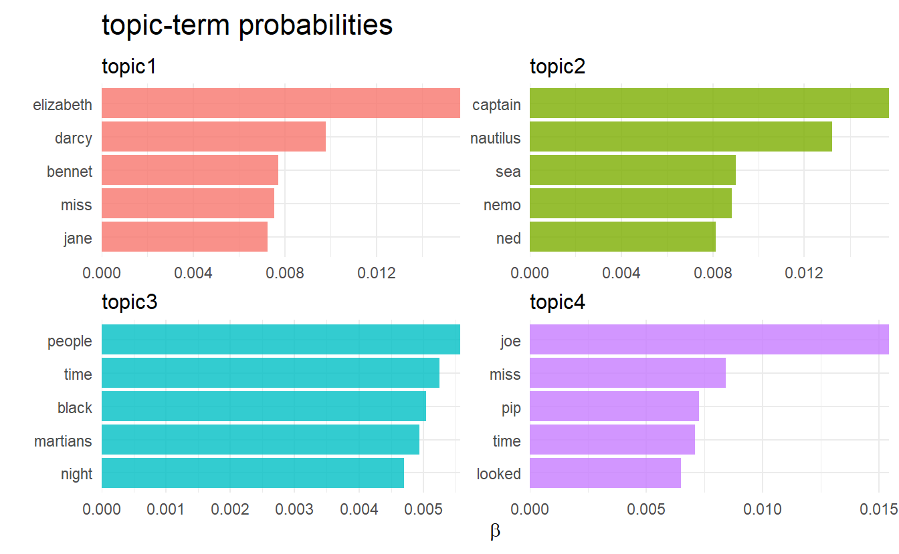
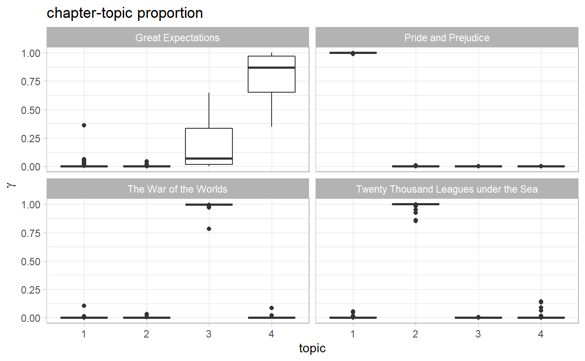
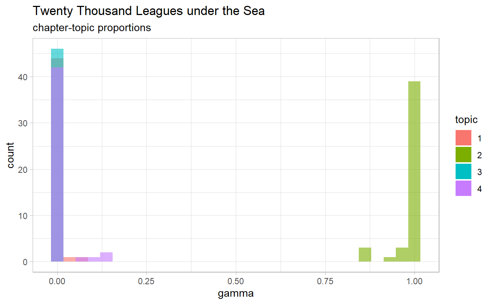
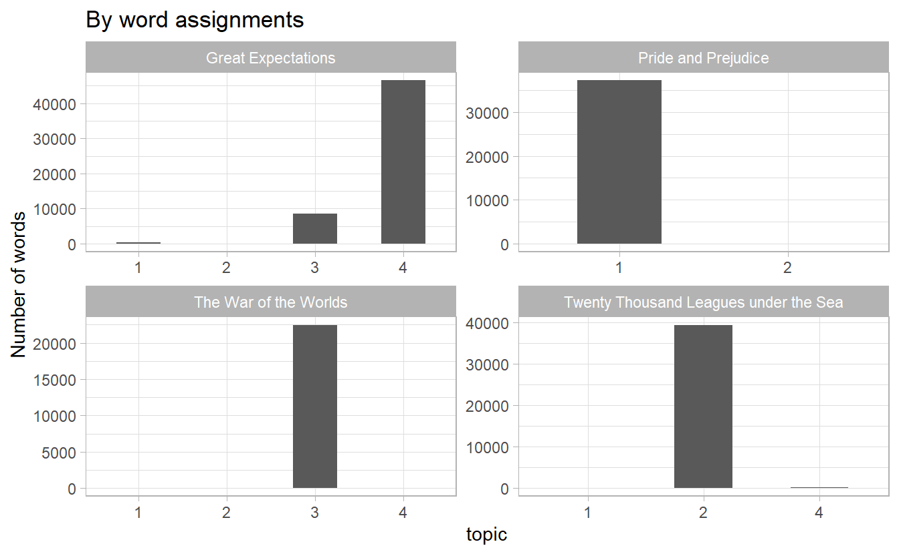
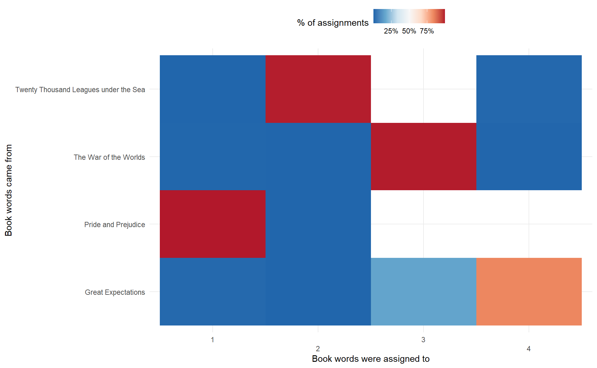

6.2 Example: the great library heist
To evaluate our topic model, we first divided 4 books into chapters. If a topic model with \(K = 4\) performs well, then there should be a corresponding segmentation among those chpaters coming from those 4 different books.
titles <- c("Twenty Thousand Leagues under the Sea",
"The War of the Worlds",
"Pride and Prejudice",
"Great Expectations")
library(gutenbergr)
books <- gutenberg_works(title %in% titles) %>%
gutenberg_download(meta_fields = "title")# add a chapter column
by_chapter <- books %>%
group_by(title) %>%
mutate(chapter = cumsum(str_detect(text, regex("^chapter ",
ignore_case = TRUE)))) %>%
ungroup() %>%
filter(chapter > 0) %>%
unite(col = document, title, chapter)
# find document-word counts
word_counts <- by_chapter %>%
unnest_tokens(word, text) %>%
anti_join(stop_words) %>%
rename(chapter = document) %>%
count(chapter, word, sort = TRUE) %>%
ungroup()
word_counts
#> # A tibble: 104,722 x 3
#> chapter word n
#> <chr> <chr> <int>
#> 1 Great Expectations_57 joe 88
#> 2 Great Expectations_7 joe 70
#> 3 Great Expectations_17 biddy 63
#> 4 Great Expectations_27 joe 58
#> 5 Great Expectations_38 estella 58
#> 6 Great Expectations_2 joe 56
#> # ... with 104,716 more rows6.2.1 LDA on chapters
chapters_dfm <- word_counts %>%
cast_dfm(document = chapter, term = word, value = n)
chapters_lda <- stm(chapters_dfm, K = 4, init.type = "LDA", verbose = FALSE)Much as we did on the Associated Press data, we can examine per-topic-per-word probabilities.
chapter_topics <- tidy(chapters_lda, matrix = "beta")
chapter_topics
#> # A tibble: 72,860 x 3
#> topic term beta
#> <int> <chr> <dbl>
#> 1 1 _accident_ 0.0000263
#> 2 2 _accident_ 0
#> 3 3 _accident_ 0
#> 4 4 _accident_ 0
#> 5 1 _advantages_ 0.0000263
#> 6 2 _advantages_ 0
#> # ... with 72,854 more rowsWe can find top 5 terms within each topic.
chapter_topics %>%
group_by(topic) %>%
top_n(5) %>%
ungroup() %>%
mutate(topic = str_c("topic", topic)) %>%
facet_bar(y = term, x = beta, by = topic) +
labs(x = expression(beta),
title = "topic-term probabilities")
I am not an expert on the other 3 books aside from Pride & Prejudice, but according to Julia, each topic did correspond to one book by and large!
6.2.2 Per-document classification
We may want to how and which topics are associated with each document, in particular, the majority of chapters in the same book should belong to the same topic (if we assign a chapter\(_m\) to a topic\(_k\) when the \(k\)th postion in \(\hat{\theta}_m\) is significantly higher).
chapters_gamma <- tidy(chapters_lda,
matrix = "gamma",
document_names = rownames(chapters_dfm)) %>%
separate(document, c("title", "chapter"), sep = "_", convert = TRUE) %>%
mutate(topic = factor(topic) %>% fct_inseq())
chapters_gamma
#> # A tibble: 772 x 4
#> title chapter topic gamma
#> <chr> <int> <fct> <dbl>
#> 1 Great Expectations 57 1 0.00602
#> 2 Great Expectations 7 1 0.0149
#> 3 Great Expectations 17 1 0.0403
#> 4 Great Expectations 27 1 0.000570
#> 5 Great Expectations 38 1 0.0281
#> 6 Great Expectations 2 1 0.000461
#> # ... with 766 more rowsggplot(chapters_gamma) +
geom_boxplot(aes(topic, gamma)) +
facet_wrap(~ title) +
labs(title = "chapter-topic proportion", y = expression(gamma))
Ideally we would expect that in every book panel, there is one boxplot highly centered at 1 with the other 3 boxes at 0, since chapters in the same book are categorized in the same topic.
Another way of visualizaing this is to plot the histogaram of chapter-topic proportions of each topic. We would expect to see two extremes
ggplot(chapters_gamma) +
geom_histogram(aes(gamma, fill = topic), show.legend = FALSE) +
facet_wrap(~ topic) +
labs(y = "Number of chapters",
x = expression(gamma),
title = "Distribution of document probabilities for each topic")
It does look like some chapters from Twenty Thousand Leagues under the Sea were somewhat associated with other topic 3 (whereas most chapters are assigned to topic 2). Let’s put in some investigation
chapters_gamma %>%
filter(title == "Twenty Thousand Leagues under the Sea") %>%
ggplot() +
geom_histogram(aes(gamma, fill = topic),
position = "identity",
alpha = 0.6) +
guides(fill = guide_legend(override.aes = list(alpha = 1))) +
labs(title = "Twenty Thousand Leagues under the Sea",
subtitle = "chapter-topic proportions")
Which chapters have a relatively high proportion of topic 3?
chapters_gamma %>%
filter(title == "Twenty Thousand Leagues under the Sea") %>%
filter(topic == "3", gamma > 0.1)
#> # A tibble: 0 x 4
#> # ... with 4 variables: title <chr>, chapter <int>, topic <fct>, gamma <dbl>As we see here, topci modeling can be viewed as text classification to some degree. We can find the topic that was most associated with each chapter using top_n(), which is essentially the “classification” of that chapter. For example, the 57th chapter of Great Expectations are assigned to topic 1.
chapter_classifications <- chapters_gamma %>%
group_by(title, chapter) %>%
top_n(1, gamma) %>%
ungroup()
chapter_classifications
#> # A tibble: 193 x 4
#> title chapter topic gamma
#> <chr> <int> <fct> <dbl>
#> 1 Pride and Prejudice 43 1 0.994
#> 2 Pride and Prejudice 18 1 1.00
#> 3 Pride and Prejudice 45 1 0.999
#> 4 Pride and Prejudice 16 1 0.999
#> 5 Pride and Prejudice 29 1 0.999
#> 6 Pride and Prejudice 10 1 0.999
#> # ... with 187 more rowsWe can then compare each to the “consensus” topic for each book (the most common topic among its chapters), and see if there is misidentification
chapter_classifications %>%
count(title, topic)
#> # A tibble: 5 x 3
#> title topic n
#> <chr> <fct> <int>
#> 1 Great Expectations 3 5
#> 2 Great Expectations 4 54
#> 3 Pride and Prejudice 1 61
#> 4 The War of the Worlds 3 27
#> 5 Twenty Thousand Leagues under the Sea 2 46In all of the 4 books, no single chapter is misidentified to another topic!
For future need, classification results are stored in classification
6.2.3 By word assignments: augment()
One step of the LDA algorithm is assigning each word in each document to a topic \(z_{m, n}\). The more words in a document are assigned to that topic, generally, the more weight \(\theta_m\) will go on that document-topic classification.
We may want to take the original document-word pairs and find which words in each document were assigned to which topic. This is the job of the augment() function, which is to add information to each observation in the original data.
assignments <- augment(chapters_lda, data = chapters_dfm) %>%
transmute(chapter = document,
term,
count,
topic = factor(.topic))
assignments
#> # A tibble: 104,722 x 4
#> chapter term count topic
#> <chr> <chr> <dbl> <fct>
#> 1 Great Expectations_57 joe 88 4
#> 2 Great Expectations_7 joe 70 4
#> 3 Great Expectations_17 joe 5 4
#> 4 Great Expectations_27 joe 58 4
#> 5 Great Expectations_2 joe 56 4
#> 6 Great Expectations_23 joe 1 4
#> # ... with 104,716 more rowsTo get a sense of how our model works, we can draw a bar plot of assigned topics in each book
assignments %>%
separate(chapter, into = c("title", "chapter"), sep = "_") %>%
count(title, topic, wt = count) %>%
ggplot(aes(topic, n)) +
geom_col(width = 0.5) +
facet_wrap(~ title, scales = "free") +
labs(y = "Number of words",
x = "topic",
title = "By word assignments")
We can combine this assignments table with the classification to find which words were incorrectly classified by a coofusion matrix.
assignments <- assignments %>%
separate(chapter, c("title", "chapter"), sep = "_", convert = TRUE) %>%
left_join(classification, by = c("topic" = "topic"))
# misidentified words
assignments %>%
filter(title != assigned_book)
#> # A tibble: 7,173 x 6
#> title chapter term count topic assigned_book
#> <chr> <int> <chr> <dbl> <fct> <chr>
#> 1 Twenty Thousand League~ 8 miss 1 4 Great Expectations
#> 2 Great Expectations 5 sergea~ 37 3 The War of the Worlds
#> 3 Great Expectations 46 captain 1 2 Twenty Thousand Leagues u~
#> 4 Great Expectations 32 captain 1 2 Twenty Thousand Leagues u~
#> 5 The War of the Worlds 17 captain 5 2 Twenty Thousand Leagues u~
#> 6 Pride and Prejudice 7 captain 3 2 Twenty Thousand Leagues u~
#> # ... with 7,167 more rows# confusion matrix
confusion_df <- assignments %>%
count(title, topic, wt = count) %>%
group_by(title) %>%
mutate(percent = n / sum(n)) %>%
ungroup()
confusion_df %>%
ggplot(aes(topic, title, fill = percent)) +
geom_tile() +
scale_fill_distiller(type = "div",
palette = "RdBu",
label = scales::percent_format()) +
scale_x_discrete(guide = guide_axis(n.dodge = 2)) +
theme_minimal() +
theme(legend.position = "top") +
labs(x = "Book words were assigned to",
y = "Book words came from",
fill = "% of assignments")
What were the most commonly mistaken words?
assignments %>%
filter(title != assigned_book) %>%
count(title, assigned_book, term, wt = count) %>%
arrange(desc(n))
#> # A tibble: 4,265 x 4
#> title assigned_book term n
#> <chr> <chr> <chr> <dbl>
#> 1 Great Expectations The War of the Worlds joe's 55
#> 2 Great Expectations The War of the Worlds orlick 51
#> 3 Great Expectations The War of the Worlds black 50
#> 4 Great Expectations The War of the Worlds night 49
#> 5 Great Expectations The War of the Worlds water 46
#> 6 Great Expectations The War of the Worlds kitchen 42
#> # ... with 4,259 more rowsWe can see that a number of words were often assigned to Pride and Prejudice or The War of the Worlds cluster even when they appeared in Great Expectations or Twenty Thousand Leagues under the Sea. For some of these words, such as “Jane”, it comes as no surprise that it will be assigned to Pride and Prejudice.
It is possible that a word is assigned to a book, even though it never appears in that book.